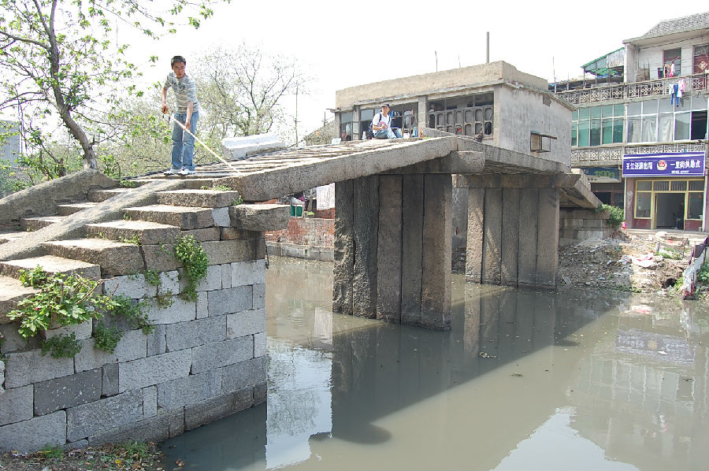
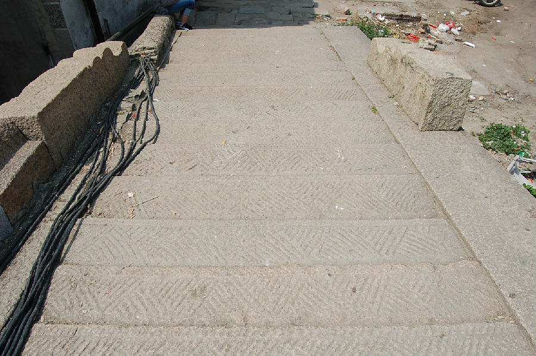

嘉兴市文物保护网 · 市级文物保护点 · 2020-11-02 · 原文


济阳桥位于嘉兴市秀洲区王江泾镇闻川社区一里街西侧、市河中段偏西处，俗呼“圣堂桥”。桥始建年代无考，清宣统三年（1911）《闻川志稿》卷二《桥梁》记载此桥，可见最迟为清末所建。南北横跨市河，系三孔石板桥，全长26.66米，净跨19.42米，桥面宽3米由5块条石平铺而成，落坡略呈喇叭状宽3.2米，南北各设石阶6级和9级，石阶上刻有斜条纹。桥底距水面高度3.3米。东西首有“济阳桥”额。东西两侧均不见桥联。济阳桥是王江泾镇的重要历史建筑物之一，历史悠久，构造讲究，对研究王江泾镇的历史提供了实物资料，具有一定的历史价值。2002年公布为嘉兴市文物保护点。